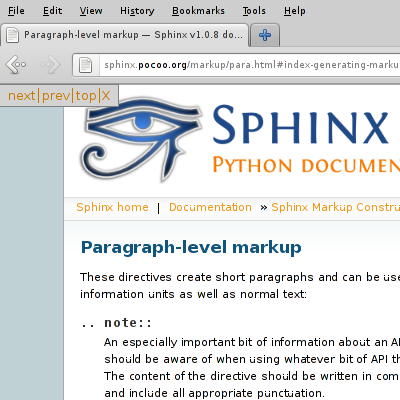

HTML Navigation toolbar for Firefox
What is it?
This is a Firefox extension which provides a small toolbar to navigate throught a website, on websites that provide the right "link types", as described in the link types section of the HTML 4 specifications.
This is useful if you are browsing documentation, such as those produced by the Sphinx documentation project or on the W3C documentation pages itself, for example.
How to install?
Install HTML navigation toolbar (you may need to authorize your web browser to install from this website). Note that you will need Firefox 38.0 or more for this extension to work.
I don't understand, what does it do exactly?
Basically, if the webpage provides the necessary information, you will have a small frame on the top left of your page, which allows to navigate through the website.
Examples

If the toolbar bothers you for a particular page, you can click the X button to close it.
Technical details
HTML navigation toolbar is developed using the Addon SDK (formerly Jetpack). You can access the source code in the Git repository (or the mirror on Github).
If you want to contact the author, just send an email at jon+jetpack-html-navigation@multani.info.